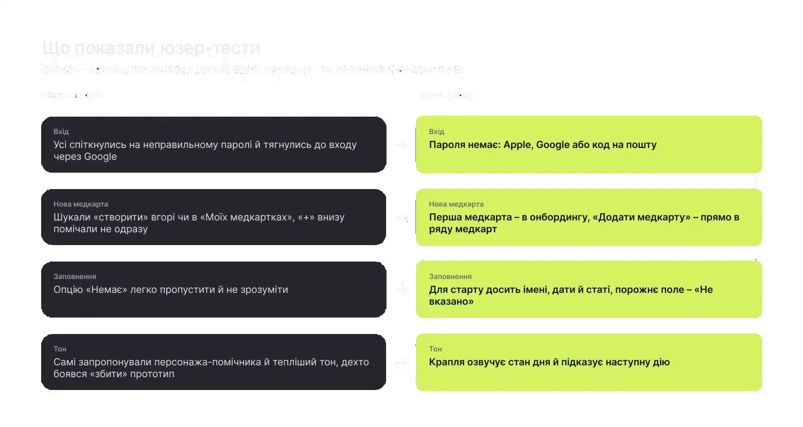
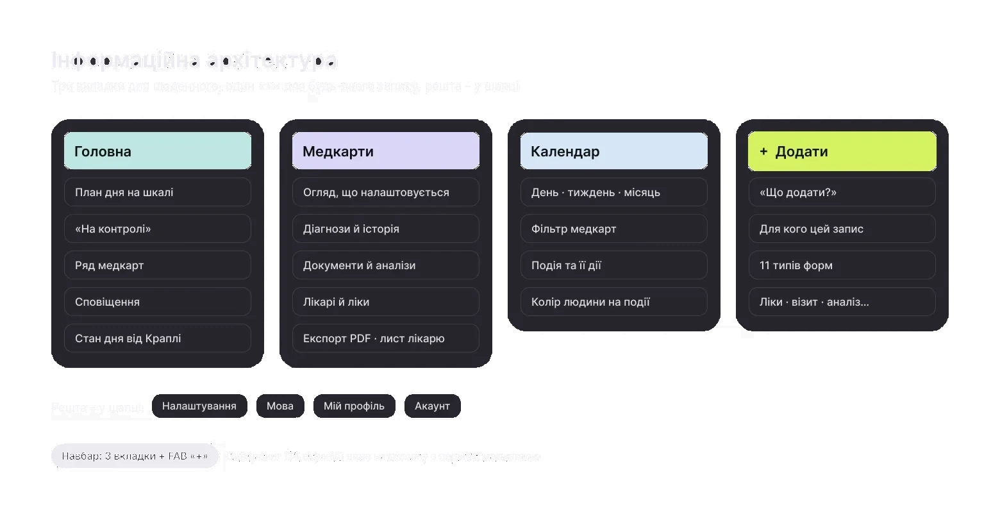
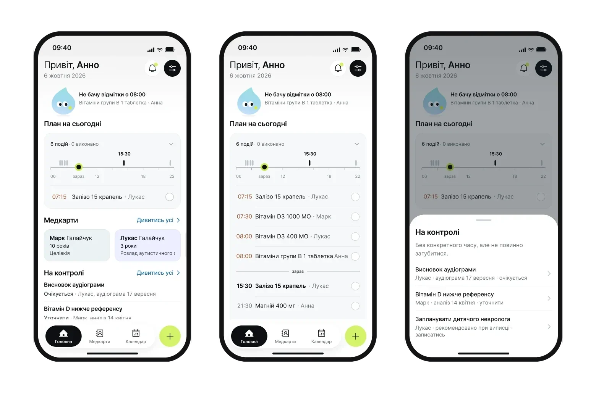
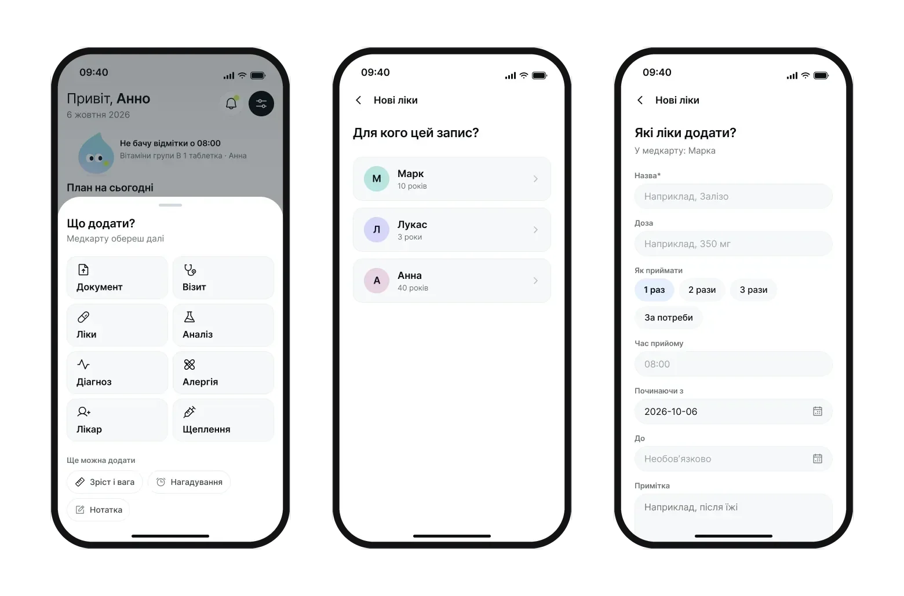
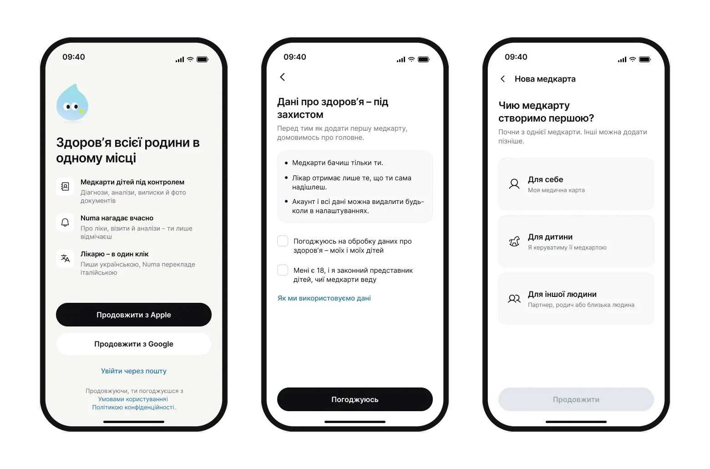
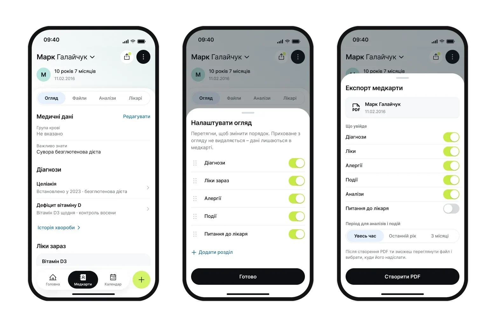
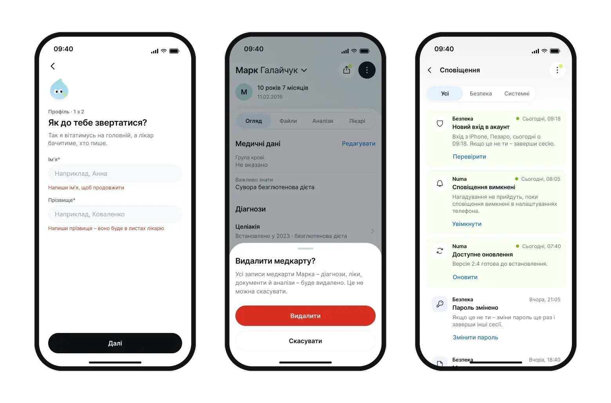

Every day a mom has to keep several kids’ medications and appointments in her head – and at the doctor’s, find the right test result in a minute and hand it over.
The goal: one app where the daily plan and the medical history live side by side without mixing. Constraints: I work solo, with no client, and the data is medical and about children.
What the survey and tests showed
Main problem – storing and finding medical records easily
73% still keep paper cards and certificatesWant to share medical data
→ decision 04: a record for the doctorWant to store family members’ data
32% – children’s profiles specifically → decision 02: “For whom”Don’t keep records digitally but would start if it’s convenient and safe
→ decision 03: passwordless sign-in and consent as a separate step65% had never used medical apps before, so simplicity matters as much as features: 68% chose it, 57% chose security.
A survey of 37 people showed what to store and what was missing, 6 in-depth interviews gave me personas and a CJM, and usability tests of the first version showed where people got stuck. Most got through navigation unaided – what had to change was sign-in, health record creation and tone.

Three tabs for everyday use – Home, Records, Calendar – and one “+” for any entry. The MVP has health records, the daily plan, documents and the letter to the doctor. Shared access and Numa AI are deliberately postponed.

Home shows the day, not a menu
- Why
- The core scenario from the interviews: every day a mom juggles several kids’ medications, her own reminders and appointments.
- What I did
- A plan on a day timeline with a “now” marker; missed items are highlighted. Tasks without a time go into a separate “Keep an eye on” block.
- Result
- A droplet mascot now voices the state of the day: “I don’t see a check-in at 08:00”. Home answers “what now” instead of pointing to sections.
StatusIn tests of the first version, participants themselves suggested a helper character and a warmer tone.

One “+” for 11 entry types
- Why
- Entries belong to different people. An “add” button in every section would make people first look for where the entry belongs.
- What I did
- “What to add?” → “For whom” → form. People think about the event, not about where to store it.
- Result
- All 11 types are added through one path – no separate button in every record and section.
StatusThe decision is in the MVP prototype. I haven’t tested it with people separately yet.

No password, consent as its own step
- Why
- In tests of the first version, every participant stumbled on the password. And the data is medical and about children – consent can’t be fine print.
- What I did
- Apple, Google or an e-mail code. Consent and 18+ confirmation before the first health record.
- Result
- The first record starts with three fields – name, date of birth, sex. The rest is added gradually.
StatusI removed the password. Onboarding became a 7-step flow where consent is its own step before the first health record.

A health record you can hand to the doctor
- Why
- What matters differs for each child, and at an appointment it has to be passed on fast, sometimes in another language.
- What I did
- Overview sections are customizable, export builds a PDF, and the letter to the doctor fills in contacts and helps with translation.
- Result
- The record became a document for the appointment, not just an archive: PDF and a letter to the doctor from one screen.
StatusPart of the MVP scope, not yet tested with people.

States and system
A third of the screens are off the happy path: empty states, errors with explanations, confirmation of irreversible actions, system notifications. Everything is built from the UI kit: 34 components, 4 variable collections, 19 text styles.

- 01
I’m building the app myself with Claude: Expo and Supabase with data in the EU.
- 02
Test the single “+” and the doctor-ready record with people – they haven’t been tested yet.
- 03
After the MVP – Numa AI: I’m already structuring the record so every fact has a source.